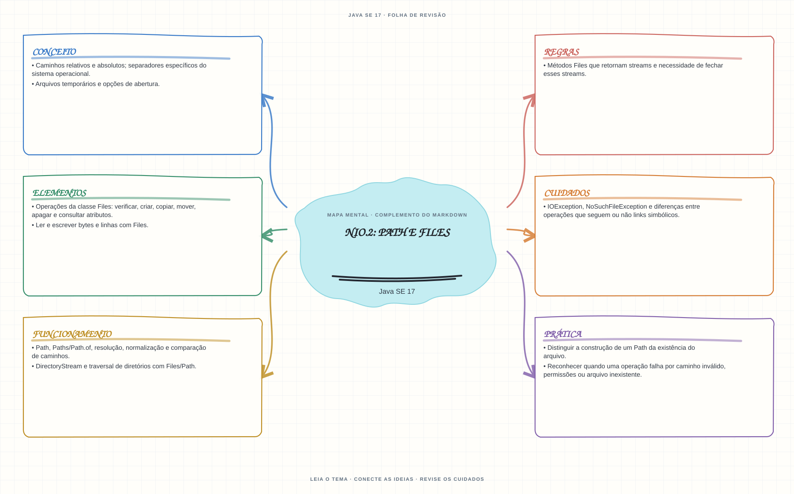

Ver mapa mental deste assuntoUsar Path para representar caminhos e Files para executar operações e tratar seus erros.
Primeiro contato: aprenda o conceito e pratique antes de consultar os detalhes de prova. Voltar aos fundamentos se algum termo ainda for novo.
- Leia o objetivo e localize a ideia principal no conteúdo abaixo.
- Preveja o resultado, compile e execute o exemplo.
- Faça a atividade sem copiar a solução e confira a checagem comentada.
EXEMPLO DE CONSOLE
Veja a regra em execução
Antes de executar, anote sua previsão. Compile o exemplo com o JDK e compare a saída observada com as regras deste assunto.
Comandos para compilar e executar
javac -d target/bin src/09-io/nio2-path-e-files/Nio2PathEFilesExample.java
java -cp target/bin Nio2PathEFilesExampleA execução imprime o resultado no console para você comparar com sua previsão.
Consultar código-fonte: Nio2PathEFilesExample.java
import java.io.IOException;
import java.nio.file.Files;
import java.nio.file.Path;
public class Nio2PathEFilesExample {
public static void main(String[] args) throws IOException {
System.out.println("=== NIO.2: Path e Files ===");
Path arquivoTemporario = Files.createTempFile("estudo-ocjp-", ".txt");
try {
String mensagem = "Estudando NIO.2";
Files.writeString(arquivoTemporario, mensagem);
System.out.println("Conteudo recuperado do arquivo: " + Files.readString(arquivoTemporario));
System.out.println("Path aponta para arquivo regular: " + Files.isRegularFile(arquivoTemporario));
System.out.println("Tamanho em bytes: " + Files.size(arquivoTemporario));
System.out.println("Caminho normalizado: " + arquivoTemporario.normalize());
} finally {
boolean removido = Files.deleteIfExists(arquivoTemporario);
System.out.println("Arquivo temporario removido: " + removido);
}
}
}
PRATIQUE AGORA
Faça uma pequena alteração por conta própria
Crie um arquivo temporário com Files, grave duas linhas, leia-as e apague o arquivo.
Concluído quando: o programa compilar, produzir o resultado esperado e você conseguir explicar a regra aplicada.
CHECAGEM RÁPIDA · NIO.2: Path e Files
Criar um objeto Path confirma que o arquivo existe?
Conferir resposta comentada
Não. Path representa um caminho; existência, permissões e operações são verificadas separadamente com Files.
Estude
Path,Paths/Path.of, resolução, normalização e comparação de caminhos.- Caminhos relativos e absolutos; separadores específicos do sistema operacional.
- Operações da classe
Files: verificar, criar, copiar, mover, apagar e consultar atributos. - Ler e escrever bytes e linhas com
Files. DirectoryStreame traversal de diretórios comFiles/Path.IOException,NoSuchFileExceptione diferenças entre operações que seguem ou não links simbólicos.- Métodos
Filesque retornam streams e necessidade de fechar esses streams. - Arquivos temporários e opções de abertura.
Verifique se consegue
- Distinguir a construção de um
Pathda existência do arquivo. - Reconhecer quando uma operação falha por caminho inválido, permissões ou arquivo inexistente.
Como este capítulo se relaciona com cada exame
Fundamentos reaproveitáveis; valide APIs e objetivos específicos de Java 8.
Base de estudo deste portal; confirme o mapeamento com o blueprint vigente.
Conceitos úteis; confira APIs e requisitos atualizados de Java 21.
Orientação editorial sobre reaproveitamento do material; não representa objetivos oficiais nem garante cobertura do exame. Consulte o comparativo e as fontes da Oracle.